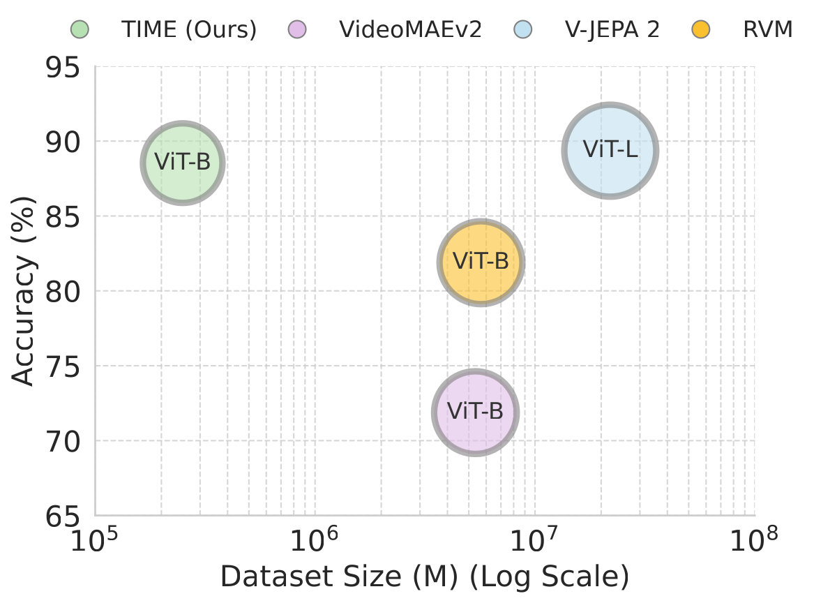
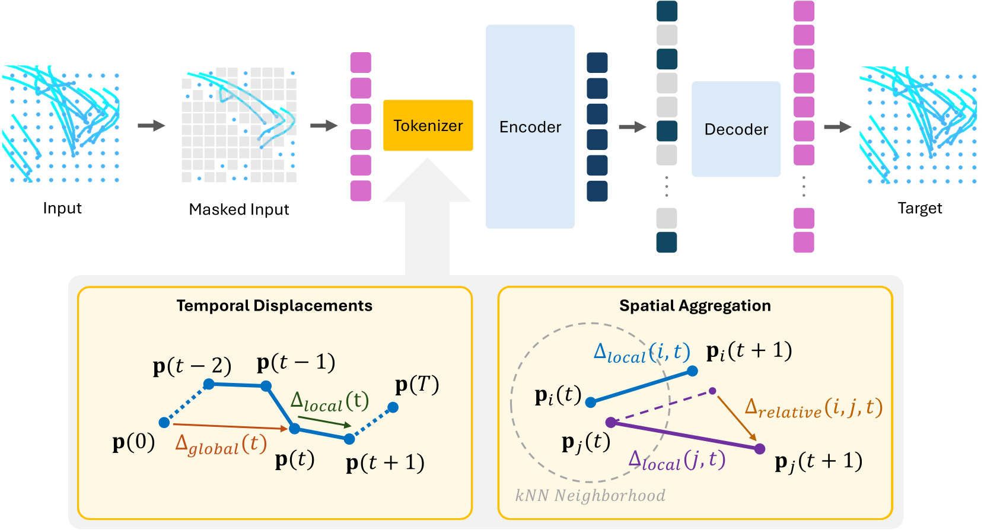
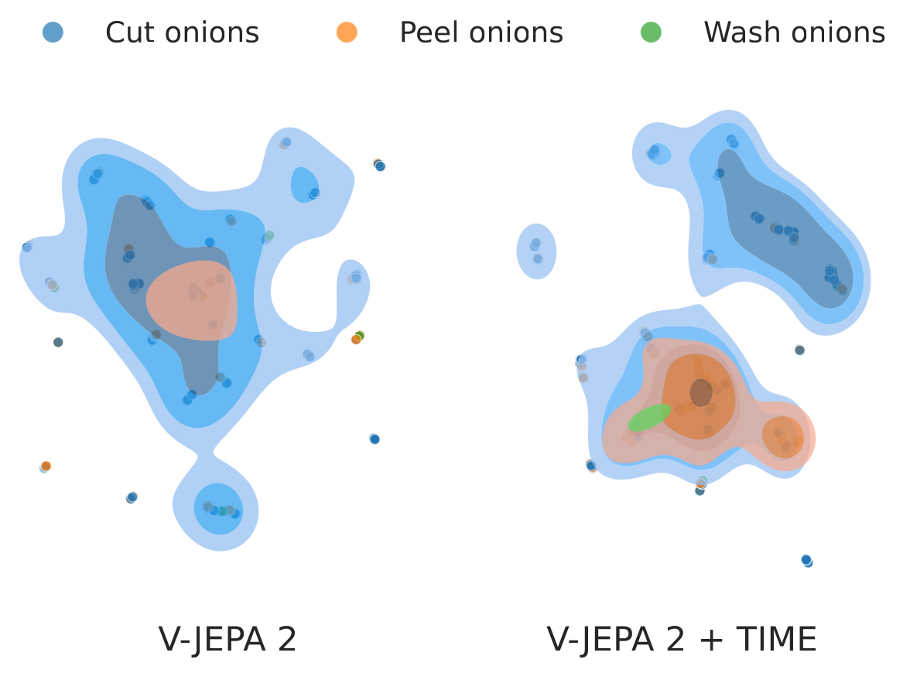

Data Efficiency: TIME achieves appearance-free action classification performance on-par with the state-of-the-art V-JEPA 2 model despite using several magnitudes less pre-training data.

Video representation learning has seen tremendous progress in recent years. This has been driven by many factors, including the scale of training and the success of visual models trained contrastively with language. While these factors have pushed the boundaries of what video models can do, they also introduce their own set of limitations: first, scaling video models can reach prohibitive costs and second, learning from language restricts the range of concepts that can be learned to those in captions. As a result, video models still struggle with temporal understanding.
In this paper we propose a novel approach that uses motion as the central modality for video representation. In particular, given the motion in a video in the form of point-tracks, we use a masked-autoencoder to mask some of the tracks and train the autoencoder to reconstruct the missing tracks. This allows us to learn a representation in a self-supervised manner.
We show that using motion to represent videos actually addresses both of the core limitations of video technology. First, it allows us to massively reduce the scale of training data, as motion is inherently appearance-independent and hence needs fewer examples to generalize well. Second, motion allows us to bypass the language-dependent training paradigm, learning better fine-grained concepts. The result is an embedding that we call TIME (Temporally Informed Motion Embedding), a representation trained exclusively on synthetic motion data.
We test this embedding on a wide set of tasks in a zero-shot manner. We observe that without bells and whistles, performance is on par with state-of-the-art models using up to 4 orders of magnitude less training data. This is a stepping stone towards a new paradigm of video models that are both more temporally aware as well as more scalable.

Given a set of point trajectories, the model groups them into tubelets and encodes them into trajectory tokens using a tokenizer, which incorporates:
We evaluate TIME on two main fronts: its ability to perform pure temporal reasoning and its complementary value when combined with state-of-the-art appearance models.
Our purely kinematic model (TIME), trained exclusively on 140 hours of synthetic simulations, outperforms a size-matched RGB model (VideoMAEv2) and maintains high competitiveness against V-JEPA, an architecture pre-trained on over 12,000 times the real-world pre-training data.
| Task | VideoMAEv2 | RVM | V-JEPA 2 | TIME (Ours) |
|---|---|---|---|---|
| SSv2 (AoT) | 71.87 | 81.88 | 89.36 | 88.53 |
| CLEVRER (T1) | 77.73 | 86.56 | 92.64 | 93.84 |
| CLEVRER (T2) | 33.33 | 58.17 | 58.92 | 74.95 |
| CLEVRER (T3) | 36.69 | 59.10 | 77.84 | 61.35 |
| Modality | 224×224 Video | 224×224 Video | 256×256 Video | 32×32 Tracks |
| Size | ViT-B | ViT-B | ViT-L | ViT-B |
| Dataset | Real-World | Real-World | Real-World | Synthetic |
| Training Samples | 5.36M (27x) | 5.68M (23x) | 22M (88x) | 0.25M (1x) |
| Video Hours Eq. | ~7,500 (54x) | ~0.25M (1,785x) | ~1.73M (12,357x) | 140 (1x) |
Because TIME operates purely on motion tracks, it is highly orthogonal to appearance models. Concatenating frozen TIME features with standard video and image representations yields massive performance gains across challenging benchmarks like SSv2, Ego-Exo4D, and Diving48.
| Model Strategy | SSv2 | Ego-Exo4D (Cooking) | Ego-Exo4D (Bike Repair) | Diving48 | ||||
|---|---|---|---|---|---|---|---|---|
| Acc. | Δ | Acc. | Δ | Acc. | Δ | Acc. | Δ | |
| TIME + CLIP | 31.56 | +13.00 | 43.27 | +17.28 | 19.31 | +3.46 | 16.11 | +2.14 |
| TIME + DINOv3 | 34.60 | +12.65 | 43.27 | +18.01 | 20.69 | +5.07 | 18.08 | +1.73 |
| TIME + VideoMAEv2 | 38.74 | +5.69 | 55.74 | +12.78 | 29.03 | +1.33 | 24.97 | +0.73 |
| TIME + RVM | 41.92 | +1.84 | 39.66 | +14.56 | 23.04 | +0.28 | 11.74 | +2.53 |
| TIME + V-JEPA 2 | 50.00 | +0.22 | 48.52 | +13.96 | 26.68 | -2.17 | 30.04 | -0.04 |
Data Efficiency: TIME achieves appearance-free action classification performance on-par with the state-of-the-art V-JEPA 2 model despite using several magnitudes less pre-training data.

Fine-Grained Temporal Features: UMAP plot showing class separation for V-JEPA vs. concatenating V-JEPA and TIME, on frozen features. Using TIME greatly improves the feature separation.

@article{TBD,
title={The TIME Machine: On The Power of Motion for Efficient Perception},
author={Skackauskas, Mantas and Hao, Xinyue and Sevilla-Lara, Laura},
journal={arXiv preprint},
year={2026}
}